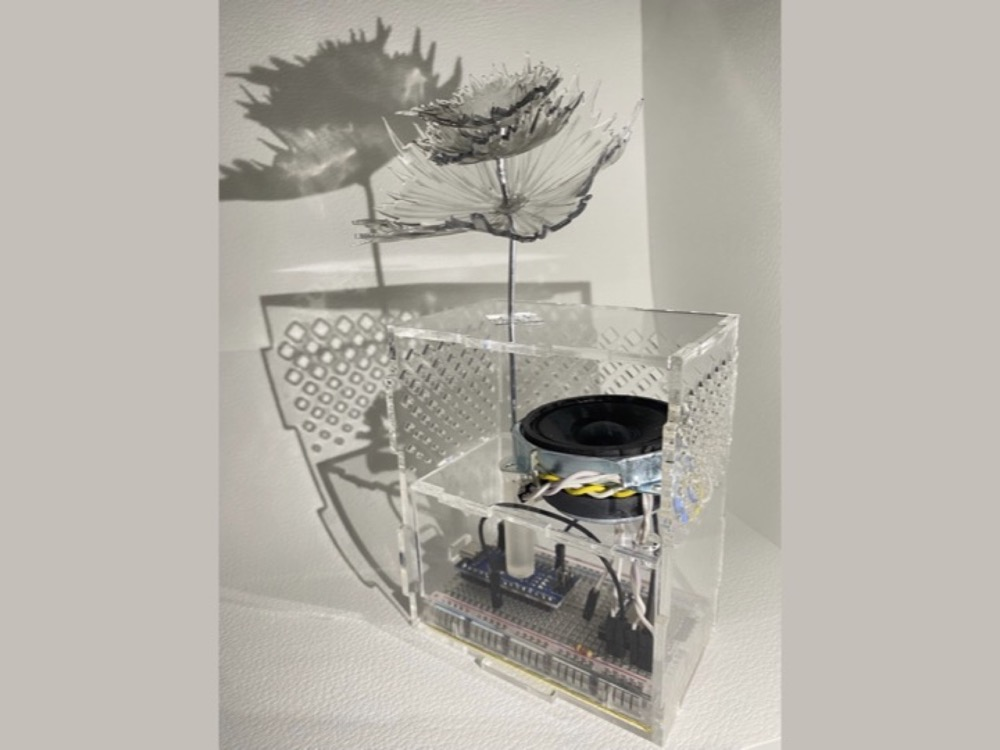
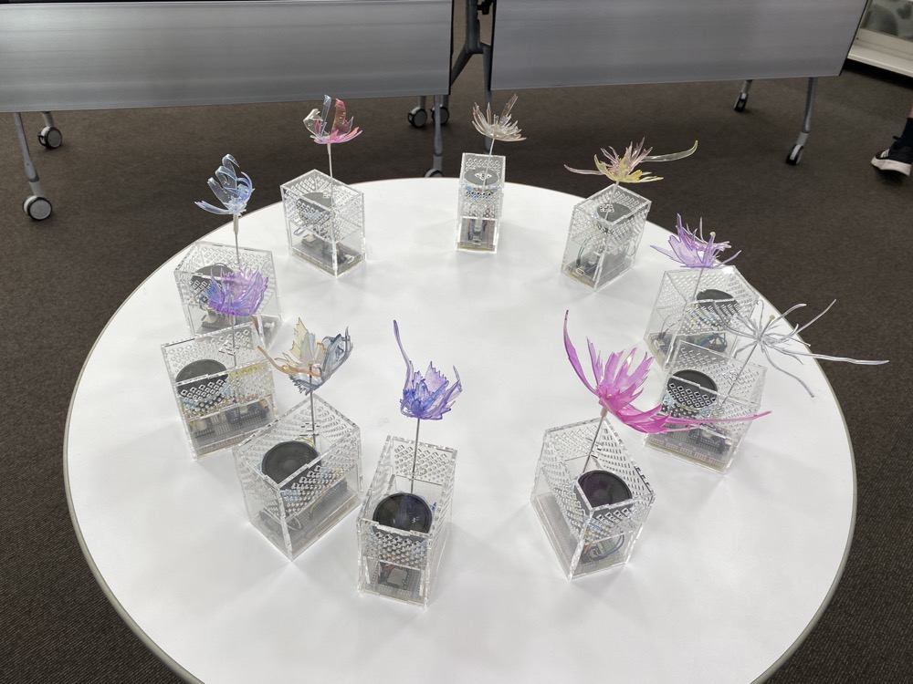

Voice Flower

Technology
- Arduino
- 3Dプリンター
- レーザーカッター
- Processing
「声」を花の形にして保存・再生するデバイス
録音した声は、波形の形の花びらが咲き保存される。花を花瓶に差すことで音声が再生される。録音した時の心情や感情などを声にして保存することができる。
録音および花びらになる円形にした音の波形はProcesisngにより出力している。録音した音声データを花瓶へ組み込むことで、花瓶から音声が再生することができる。
画像として出力した波形はレーザーカッターによりプラバンへ切り出される。切り出したプラ板は加熱することで花を作成する。
本デバイスは明星大学100周年記念企画として制作ワークショップを行った．
